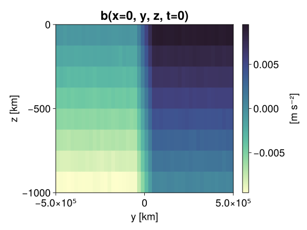

Baroclinic adjustment
In this example, we simulate the evolution and equilibration of a baroclinically unstable front.
Install dependencies
First let's make sure we have all required packages installed.
using Pkg
pkg"add Oceananigans, CairoMakie"using Oceananigans
using Oceananigans.UnitsGrid
We use a three-dimensional channel that is periodic in the x direction:
Lx = 1000kilometers # east-west extent [m]
Ly = 1000kilometers # north-south extent [m]
Lz = 1kilometers # depth [m]
grid = RectilinearGrid(size = (48, 48, 8),
x = (0, Lx),
y = (-Ly/2, Ly/2),
z = (-Lz, 0),
topology = (Periodic, Bounded, Bounded))48×48×8 RectilinearGrid{Float64, Periodic, Bounded, Bounded} on CPU with 3×3×3 halo
├── Periodic x ∈ [0.0, 1.0e6) regularly spaced with Δx=20833.3
├── Bounded y ∈ [-500000.0, 500000.0] regularly spaced with Δy=20833.3
└── Bounded z ∈ [-1000.0, 0.0] regularly spaced with Δz=125.0Model
We built a HydrostaticFreeSurfaceModel with an ImplicitFreeSurface solver. Regarding Coriolis, we use a beta-plane centered at 45° South.
model = HydrostaticFreeSurfaceModel(; grid,
coriolis = BetaPlane(latitude = -45),
buoyancy = BuoyancyTracer(),
tracers = :b,
momentum_advection = WENO(),
tracer_advection = WENO())HydrostaticFreeSurfaceModel{CPU, RectilinearGrid}(time = 0 seconds, iteration = 0)
├── grid: 48×48×8 RectilinearGrid{Float64, Periodic, Bounded, Bounded} on CPU with 3×3×3 halo
├── timestepper: QuasiAdamsBashforth2TimeStepper
├── tracers: b
├── closure: Nothing
├── buoyancy: BuoyancyTracer with ĝ = NegativeZDirection()
├── free surface: ImplicitFreeSurface with gravitational acceleration 9.80665 m s⁻²
│ └── solver: FFTImplicitFreeSurfaceSolver
├── advection scheme:
│ ├── momentum: WENO{3, Float64, Float32}(order=5)
│ └── b: WENO{3, Float64, Float32}(order=5)
├── vertical_coordinate: ZCoordinate
└── coriolis: BetaPlane{Float64}We start our simulation from rest with a baroclinically unstable buoyancy distribution. We use ramp(y, Δy), defined below, to specify a front with width Δy and horizontal buoyancy gradient M². We impose the front on top of a vertical buoyancy gradient N² and a bit of noise.
"""
ramp(y, Δy)
Linear ramp from 0 to 1 between -Δy/2 and +Δy/2.
For example:
```
y < -Δy/2 => ramp = 0
-Δy/2 < y < -Δy/2 => ramp = y / Δy
y > Δy/2 => ramp = 1
```
"""
ramp(y, Δy) = min(max(0, y/Δy + 1/2), 1)
N² = 1e-5 # [s⁻²] buoyancy frequency / stratification
M² = 1e-7 # [s⁻²] horizontal buoyancy gradient
Δy = 100kilometers # width of the region of the front
Δb = Δy * M² # buoyancy jump associated with the front
ϵb = 1e-2 * Δb # noise amplitude
bᵢ(x, y, z) = N² * z + Δb * ramp(y, Δy) + ϵb * randn()
set!(model, b=bᵢ)Let's visualize the initial buoyancy distribution.
using CairoMakie
set_theme!(Theme(fontsize = 20))
# Build coordinates with units of kilometers
x, y, z = 1e-3 .* nodes(grid, (Center(), Center(), Center()))
b = model.tracers.b
fig, ax, hm = heatmap(view(b, 1, :, :),
colormap = :deep,
axis = (xlabel = "y [km]",
ylabel = "z [km]",
title = "b(x=0, y, z, t=0)",
titlesize = 24))
Colorbar(fig[1, 2], hm, label = "[m s⁻²]")
fig
Simulation
Now let's build a Simulation.
simulation = Simulation(model, Δt=20minutes, stop_time=20days)Simulation of HydrostaticFreeSurfaceModel{CPU, RectilinearGrid}(time = 0 seconds, iteration = 0)
├── Next time step: 20 minutes
├── Elapsed wall time: 0 seconds
├── Wall time per iteration: NaN days
├── Stop time: 20 days
├── Stop iteration: Inf
├── Wall time limit: Inf
├── Minimum relative step: 0.0
├── Callbacks: OrderedDict with 4 entries:
│ ├── stop_time_exceeded => 4
│ ├── stop_iteration_exceeded => -
│ ├── wall_time_limit_exceeded => e
│ └── nan_checker => }
├── Output writers: OrderedDict with no entries
└── Diagnostics: OrderedDict with no entriesWe add a TimeStepWizard callback to adapt the simulation's time-step,
conjure_time_step_wizard!(simulation, IterationInterval(20), cfl=0.2, max_Δt=20minutes)Also, we add a callback to print a message about how the simulation is going,
using Printf
wall_clock = Ref(time_ns())
function print_progress(sim)
u, v, w = model.velocities
progress = 100 * (time(sim) / sim.stop_time)
elapsed = (time_ns() - wall_clock[]) / 1e9
@printf("[%05.2f%%] i: %d, t: %s, wall time: %s, max(u): (%6.3e, %6.3e, %6.3e) m/s, next Δt: %s\n",
progress, iteration(sim), prettytime(sim), prettytime(elapsed),
maximum(abs, u), maximum(abs, v), maximum(abs, w), prettytime(sim.Δt))
wall_clock[] = time_ns()
return nothing
end
add_callback!(simulation, print_progress, IterationInterval(100))Diagnostics/Output
Here, we save the buoyancy, $b$, at the edges of our domain as well as the zonal ($x$) average of buoyancy.
u, v, w = model.velocities
ζ = ∂x(v) - ∂y(u)
B = Average(b, dims=1)
U = Average(u, dims=1)
V = Average(v, dims=1)
filename = "baroclinic_adjustment"
save_fields_interval = 0.5day
slicers = (east = (grid.Nx, :, :),
north = (:, grid.Ny, :),
bottom = (:, :, 1),
top = (:, :, grid.Nz))
for side in keys(slicers)
indices = slicers[side]
simulation.output_writers[side] = JLD2Writer(model, (; b, ζ);
filename = filename * "_$(side)_slice",
schedule = TimeInterval(save_fields_interval),
overwrite_existing = true,
indices)
end
simulation.output_writers[:zonal] = JLD2Writer(model, (; b=B, u=U, v=V);
filename = filename * "_zonal_average",
schedule = TimeInterval(save_fields_interval),
overwrite_existing = true)JLD2Writer scheduled on TimeInterval(12 hours):
├── filepath: baroclinic_adjustment_zonal_average.jld2
├── 3 outputs: (b, u, v)
├── array_type: Array{Float32}
├── including: [:grid, :coriolis, :buoyancy, :closure]
├── file_splitting: NoFileSplitting
└── file size: 32.5 KiBNow we're ready to run.
@info "Running the simulation..."
run!(simulation)
@info "Simulation completed in " * prettytime(simulation.run_wall_time)[ Info: Running the simulation...
[ Info: Initializing simulation...
[00.00%] i: 0, t: 0 seconds, wall time: 20.430 seconds, max(u): (0.000e+00, 0.000e+00, 0.000e+00) m/s, next Δt: 20 minutes
[ Info: ... simulation initialization complete (14.376 seconds)
[ Info: Executing initial time step...
[ Info: ... initial time step complete (9.291 seconds).
[06.94%] i: 100, t: 1.389 days, wall time: 20.462 seconds, max(u): (1.284e-01, 1.227e-01, 1.563e-03) m/s, next Δt: 20 minutes
[13.89%] i: 200, t: 2.778 days, wall time: 1.851 seconds, max(u): (2.155e-01, 1.674e-01, 1.764e-03) m/s, next Δt: 20 minutes
[20.83%] i: 300, t: 4.167 days, wall time: 2.244 seconds, max(u): (2.813e-01, 2.280e-01, 1.809e-03) m/s, next Δt: 20 minutes
[27.78%] i: 400, t: 5.556 days, wall time: 1.970 seconds, max(u): (3.593e-01, 3.025e-01, 1.842e-03) m/s, next Δt: 20 minutes
[34.72%] i: 500, t: 6.944 days, wall time: 1.907 seconds, max(u): (4.373e-01, 4.624e-01, 1.951e-03) m/s, next Δt: 20 minutes
[41.67%] i: 600, t: 8.333 days, wall time: 1.923 seconds, max(u): (5.818e-01, 7.891e-01, 2.814e-03) m/s, next Δt: 20 minutes
[48.61%] i: 700, t: 9.722 days, wall time: 1.998 seconds, max(u): (8.124e-01, 1.235e+00, 3.451e-03) m/s, next Δt: 20 minutes
[55.56%] i: 800, t: 11.111 days, wall time: 1.997 seconds, max(u): (1.222e+00, 1.180e+00, 4.798e-03) m/s, next Δt: 20 minutes
[62.50%] i: 900, t: 12.500 days, wall time: 2.146 seconds, max(u): (1.312e+00, 1.229e+00, 5.190e-03) m/s, next Δt: 20 minutes
[69.44%] i: 1000, t: 13.889 days, wall time: 2.205 seconds, max(u): (1.333e+00, 1.121e+00, 5.026e-03) m/s, next Δt: 20 minutes
[76.39%] i: 1100, t: 15.278 days, wall time: 2.240 seconds, max(u): (1.326e+00, 1.144e+00, 4.886e-03) m/s, next Δt: 20 minutes
[83.33%] i: 1200, t: 16.667 days, wall time: 2.255 seconds, max(u): (1.223e+00, 1.245e+00, 3.073e-03) m/s, next Δt: 20 minutes
[90.28%] i: 1300, t: 18.056 days, wall time: 2.265 seconds, max(u): (1.304e+00, 1.091e+00, 3.441e-03) m/s, next Δt: 20 minutes
[97.22%] i: 1400, t: 19.444 days, wall time: 2.283 seconds, max(u): (1.439e+00, 1.228e+00, 3.533e-03) m/s, next Δt: 20 minutes
[ Info: Simulation is stopping after running for 56.031 seconds.
[ Info: Simulation time 20 days equals or exceeds stop time 20 days.
[ Info: Simulation completed in 56.050 seconds
Visualization
All that's left is to make a pretty movie. Actually, we make two visualizations here. First, we illustrate how to make a 3D visualization with Makie's Axis3 and Makie.surface. Then we make a movie in 2D. We use CairoMakie in this example, but note that using GLMakie is more convenient on a system with OpenGL, as figures will be displayed on the screen.
using CairoMakieThree-dimensional visualization
We load the saved buoyancy output on the top, north, and east surface as FieldTimeSerieses.
filename = "baroclinic_adjustment"
sides = keys(slicers)
slice_filenames = NamedTuple(side => filename * "_$(side)_slice.jld2" for side in sides)
b_timeserieses = (east = FieldTimeSeries(slice_filenames.east, "b"),
north = FieldTimeSeries(slice_filenames.north, "b"),
top = FieldTimeSeries(slice_filenames.top, "b"))
B_timeseries = FieldTimeSeries(filename * "_zonal_average.jld2", "b")
times = B_timeseries.times
grid = B_timeseries.grid48×48×8 RectilinearGrid{Float64, Periodic, Bounded, Bounded} on CPU with 3×3×3 halo
├── Periodic x ∈ [0.0, 1.0e6) regularly spaced with Δx=20833.3
├── Bounded y ∈ [-500000.0, 500000.0] regularly spaced with Δy=20833.3
└── Bounded z ∈ [-1000.0, 0.0] regularly spaced with Δz=125.0We build the coordinates. We rescale horizontal coordinates to kilometers.
xb, yb, zb = nodes(b_timeserieses.east)
xb = xb ./ 1e3 # convert m -> km
yb = yb ./ 1e3 # convert m -> km
Nx, Ny, Nz = size(grid)
x_xz = repeat(x, 1, Nz)
y_xz_north = y[end] * ones(Nx, Nz)
z_xz = repeat(reshape(z, 1, Nz), Nx, 1)
x_yz_east = x[end] * ones(Ny, Nz)
y_yz = repeat(y, 1, Nz)
z_yz = repeat(reshape(z, 1, Nz), grid.Ny, 1)
x_xy = x
y_xy = y
z_xy_top = z[end] * ones(grid.Nx, grid.Ny)Then we create a 3D axis. We use zonal_slice_displacement to control where the plot of the instantaneous zonal average flow is located.
fig = Figure(size = (1600, 800))
zonal_slice_displacement = 1.2
ax = Axis3(fig[2, 1],
aspect=(1, 1, 1/5),
xlabel = "x (km)",
ylabel = "y (km)",
zlabel = "z (m)",
xlabeloffset = 100,
ylabeloffset = 100,
zlabeloffset = 100,
limits = ((x[1], zonal_slice_displacement * x[end]), (y[1], y[end]), (z[1], z[end])),
elevation = 0.45,
azimuth = 6.8,
xspinesvisible = false,
zgridvisible = false,
protrusions = 40,
perspectiveness = 0.7)Axis3()We use data from the final savepoint for the 3D plot. Note that this plot can easily be animated by using Makie's Observable. To dive into Observables, check out Makie.jl's Documentation.
n = length(times)41Now let's make a 3D plot of the buoyancy and in front of it we'll use the zonally-averaged output to plot the instantaneous zonal-average of the buoyancy.
b_slices = (east = interior(b_timeserieses.east[n], 1, :, :),
north = interior(b_timeserieses.north[n], :, 1, :),
top = interior(b_timeserieses.top[n], :, :, 1))
# Zonally-averaged buoyancy
B = interior(B_timeseries[n], 1, :, :)
clims = 1.1 .* extrema(b_timeserieses.top[n][:])
kwargs = (colorrange=clims, colormap=:deep, shading=NoShading)
surface!(ax, x_yz_east, y_yz, z_yz; color = b_slices.east, kwargs...)
surface!(ax, x_xz, y_xz_north, z_xz; color = b_slices.north, kwargs...)
surface!(ax, x_xy, y_xy, z_xy_top; color = b_slices.top, kwargs...)
sf = surface!(ax, zonal_slice_displacement .* x_yz_east, y_yz, z_yz; color = B, kwargs...)
contour!(ax, y, z, B; transformation = (:yz, zonal_slice_displacement * x[end]),
levels = 15, linewidth = 2, color = :black)
Colorbar(fig[2, 2], sf, label = "m s⁻²", height = Relative(0.4), tellheight=false)
title = "Buoyancy at t = " * string(round(times[n] / day, digits=1)) * " days"
fig[1, 1:2] = Label(fig, title; fontsize = 24, tellwidth = false, padding = (0, 0, -120, 0))
rowgap!(fig.layout, 1, Relative(-0.2))
colgap!(fig.layout, 1, Relative(-0.1))
save("baroclinic_adjustment_3d.png", fig)
Two-dimensional movie
We make a 2D movie that shows buoyancy $b$ and vertical vorticity $ζ$ at the surface, as well as the zonally-averaged zonal and meridional velocities $U$ and $V$ in the $(y, z)$ plane. First we load the FieldTimeSeries and extract the additional coordinates we'll need for plotting
ζ_timeseries = FieldTimeSeries(slice_filenames.top, "ζ")
U_timeseries = FieldTimeSeries(filename * "_zonal_average.jld2", "u")
B_timeseries = FieldTimeSeries(filename * "_zonal_average.jld2", "b")
V_timeseries = FieldTimeSeries(filename * "_zonal_average.jld2", "v")
xζ, yζ, zζ = nodes(ζ_timeseries)
yv = ynodes(V_timeseries)
xζ = xζ ./ 1e3 # convert m -> km
yζ = yζ ./ 1e3 # convert m -> km
yv = yv ./ 1e3 # convert m -> km-500.0:20.833333333333332:500.0Next, we set up a plot with 4 panels. The top panels are large and square, while the bottom panels get a reduced aspect ratio through rowsize!.
fig = Figure(size=(1800, 1000))
axb = Axis(fig[1, 2], xlabel="x (km)", ylabel="y (km)", aspect=1)
axζ = Axis(fig[1, 3], xlabel="x (km)", ylabel="y (km)", aspect=1, yaxisposition=:right)
axu = Axis(fig[2, 2], xlabel="y (km)", ylabel="z (m)")
axv = Axis(fig[2, 3], xlabel="y (km)", ylabel="z (m)", yaxisposition=:right)
rowsize!(fig.layout, 2, Relative(0.3))To prepare a plot for animation, we index the timeseries with an Observable,
n = Observable(1)
b_top = @lift interior(b_timeserieses.top[$n], :, :, 1)
ζ_top = @lift interior(ζ_timeseries[$n], :, :, 1)
U = @lift interior(U_timeseries[$n], 1, :, :)
V = @lift interior(V_timeseries[$n], 1, :, :)
B = @lift interior(B_timeseries[$n], 1, :, :)Observable([-0.009359532035887241 -0.008101513609290123 -0.006863062269985676 -0.00561874732375145 -0.004381408914923668 -0.0031316138338297606 -0.001891045249067247 -0.0006315717473626137; -0.00939029548317194 -0.008123303763568401 -0.006869222037494183 -0.00562577648088336 -0.004358251113444567 -0.00313223316334188 -0.001874998095445335 -0.00064238061895594; -0.009372878819704056 -0.008128659799695015 -0.006877056322991848 -0.0056500560604035854 -0.004379544407129288 -0.003121863817796111 -0.001886257086880505 -0.0006406665197573602; -0.009386779740452766 -0.00814926065504551 -0.006868869066238403 -0.005628490354865789 -0.004368131514638662 -0.0031174025498330593 -0.0018550818786025047 -0.0006141873309388757; -0.009398477151989937 -0.008104234002530575 -0.006877472624182701 -0.00562161672860384 -0.0044114915654063225 -0.0031414092518389225 -0.0018766727298498154 -0.0006285614217631519; -0.009380477480590343 -0.00813201442360878 -0.0068948292173445225 -0.005619887728244066 -0.004377733450382948 -0.0031223988626152277 -0.0018749033333733678 -0.0006256545311771333; -0.009344516322016716 -0.008134948089718819 -0.006878961343318224 -0.005620104726403952 -0.004355887416750193 -0.0031088150572031736 -0.0018993954872712493 -0.000636213575489819; -0.009376521222293377 -0.008137703873217106 -0.006876274477690458 -0.005627898965030909 -0.004359574057161808 -0.0031290831975638866 -0.0018759211525321007 -0.0006307516014203429; -0.009406140074133873 -0.008122733794152737 -0.00688971858471632 -0.005621298216283321 -0.004385485779494047 -0.003141903318464756 -0.0018932801904156804 -0.0006193392910063267; -0.009369262494146824 -0.00810937862843275 -0.006884425412863493 -0.005643214099109173 -0.004378374200314283 -0.0031342455185949802 -0.0018738068174570799 -0.0006117667653597891; -0.009395601227879524 -0.008109654299914837 -0.006880421191453934 -0.0056300899013876915 -0.004397653508931398 -0.0031099573243409395 -0.0018667463446035981 -0.000649328576400876; -0.009339183568954468 -0.008133879862725735 -0.006886505521833897 -0.005595856346189976 -0.0043735262006521225 -0.003130786120891571 -0.0018742148531600833 -0.0006024560425430536; -0.00936803873628378 -0.008140364661812782 -0.006887377239763737 -0.005634474102407694 -0.00437832111492753 -0.0031197897624224424 -0.0018988576484844089 -0.0006142727797850966; -0.00936865247786045 -0.008129401132464409 -0.006864346098154783 -0.005643409676849842 -0.004368585534393787 -0.0031313621439039707 -0.0018790604081004858 -0.0006361797568388283; -0.009369753301143646 -0.008123183622956276 -0.006849075201898813 -0.005603473633527756 -0.004402667284011841 -0.0031195031479001045 -0.0018606066005304456 -0.0006373743526637554; -0.009373041801154613 -0.00810928363353014 -0.0068895695731043816 -0.005627333652228117 -0.0043799616396427155 -0.0031324794981628656 -0.0018758100923150778 -0.000645565043669194; -0.00938807800412178 -0.008119145408272743 -0.006887809373438358 -0.005624744575470686 -0.004389675334095955 -0.00313111231662333 -0.0018936680862680078 -0.0006186607643030584; -0.009384317323565483 -0.008132114075124264 -0.006866136100143194 -0.00563832325860858 -0.004376459401100874 -0.0031129252165555954 -0.0019058339530602098 -0.0006224632961675525; -0.0093443738296628 -0.00810230802744627 -0.006889118812978268 -0.005621494725346565 -0.004383707419037819 -0.00311881466768682 -0.0018690561410039663 -0.0006185796810314059; -0.009383821859955788 -0.008133377879858017 -0.006890852935612202 -0.0056276749819517136 -0.004359766840934753 -0.00311725540086627 -0.0018670271383598447 -0.0006251370650716126; -0.009380771778523922 -0.008155223913490772 -0.0068942042998969555 -0.005623057018965483 -0.004366980399936438 -0.003135624108836055 -0.0018649293342605233 -0.0006185973179526627; -0.00936891045421362 -0.008132195100188255 -0.006874395534396172 -0.005616688169538975 -0.004385065287351608 -0.0031162153463810682 -0.0018769435118883848 -0.0006339780520647764; -0.007517942693084478 -0.0062324111349880695 -0.0049775708466768265 -0.0037558728363364935 -0.0024882310535758734 -0.0012594389263540506 -1.3198464330343995e-5 0.001265635946765542; -0.005428691394627094 -0.004157098941504955 -0.002928743604570627 -0.0016824575141072273 -0.0004106539417989552 0.0008261467446573079 0.0020888582803308964 0.003340734401717782; -0.0033301839139312506 -0.0020871483720839024 -0.0008549640187993646 0.0003832023066934198 0.001686501782387495 0.0029335126746445894 0.004134793765842915 0.005393906030803919; -0.0012390721822157502 1.3235008736955933e-5 0.001254584058187902 0.0024868538603186607 0.003745787311345339 0.005007773172110319 0.006235376466065645 0.007483731489628553; 0.0006208490231074393 0.0018817153759300709 0.0031262545380741358 0.004393790382891893 0.00561087392270565 0.006874429527670145 0.008131032809615135 0.00935783889144659; 0.0006471374654211104 0.0018698236672207713 0.0031159238424152136 0.004390180576592684 0.005647376179695129 0.006868797354400158 0.008136725053191185 0.009367212653160095; 0.000622146762907505 0.0018716638442128897 0.0030927779152989388 0.004377598874270916 0.005617094226181507 0.0068785762414336205 0.008119015023112297 0.009367387741804123; 0.0006494564586319029 0.0018703717505559325 0.00313582899980247 0.004380052909255028 0.005617443006485701 0.006906361319124699 0.008124662563204765 0.009363740682601929; 0.0006165403756313026 0.0018658570479601622 0.0031237194780260324 0.00436850730329752 0.00562477158382535 0.006882566958665848 0.008129943162202835 0.009377485141158104; 0.0006347098387777805 0.001865974860265851 0.003115585772320628 0.004360533785074949 0.005642404779791832 0.006882866844534874 0.008098552003502846 0.009375503286719322; 0.0006392209324985743 0.001898042974062264 0.0031276466324925423 0.004369329661130905 0.005638863425701857 0.006862959824502468 0.008121266961097717 0.009402132593095303; 0.000650014728307724 0.0018962286412715912 0.003115343861281872 0.004393198527395725 0.00564442528411746 0.006822181865572929 0.008123054169118404 0.00935195479542017; 0.0005987053737044334 0.001865170313976705 0.003117118263617158 0.004354181699454784 0.005604691803455353 0.0068665980361402035 0.008104125037789345 0.009362541139125824; 0.0006315899081528187 0.0018669620621949434 0.003128760727122426 0.004371308721601963 0.005642280913889408 0.006856830324977636 0.008108939975500107 0.009367277845740318; 0.0006367109599523246 0.001883984892629087 0.003117408137768507 0.004363596439361572 0.0056457226164639 0.006868309807032347 0.008141659200191498 0.009358122944831848; 0.0006317346706055105 0.0018299079965800047 0.003107598749920726 0.004343767650425434 0.00563536211848259 0.006887560710310936 0.00814279355108738 0.009390917606651783; 0.000616207136772573 0.0018536944407969713 0.003138139843940735 0.00437161372974515 0.0056198337115347385 0.006864386610686779 0.008122162893414497 0.00938320066779852; 0.0006215142202563584 0.0018745207926258445 0.0031269723549485207 0.004363144747912884 0.005632559768855572 0.0068894061259925365 0.008125483989715576 0.009395316243171692; 0.0006327720475383103 0.0018991627730429173 0.003113212063908577 0.004369068890810013 0.0056138476356863976 0.006854471750557423 0.00812370516359806 0.00938444584608078; 0.0006185932434163988 0.0018700746586546302 0.003124990500509739 0.004366231616586447 0.005625012796372175 0.0068899341858923435 0.00812065415084362 0.009375043213367462; 0.0006054224795661867 0.0018755728378891945 0.003126292722299695 0.004377155099064112 0.005632318090647459 0.00688549829646945 0.008104179054498672 0.00938663724809885; 0.0006340185645967722 0.0018777569057419896 0.003132587531581521 0.00438104011118412 0.005606234073638916 0.006871852558106184 0.008131005801260471 0.009372350759804249; 0.0006230343715287745 0.0018594141583889723 0.0031316434033215046 0.004414197523146868 0.005624419543892145 0.006879940163344145 0.008147452026605606 0.009340791031718254; 0.0006138967582955956 0.00185201910790056 0.00311297201551497 0.004415769595652819 0.005632753949612379 0.006863643880933523 0.00812464114278555 0.009409594349563122; 0.0006213949527591467 0.0018763614352792501 0.003141403431072831 0.00438103498890996 0.005617129150778055 0.006877362262457609 0.00812510959804058 0.009383869357407093; 0.0006639084313064814 0.0018821185221895576 0.0031332666985690594 0.0043749879114329815 0.005620921030640602 0.006883847527205944 0.008112814277410507 0.009372491389513016])
and then build our plot:
hm = heatmap!(axb, xb, yb, b_top, colorrange=(0, Δb), colormap=:thermal)
Colorbar(fig[1, 1], hm, flipaxis=false, label="Surface b(x, y) (m s⁻²)")
hm = heatmap!(axζ, xζ, yζ, ζ_top, colorrange=(-5e-5, 5e-5), colormap=:balance)
Colorbar(fig[1, 4], hm, label="Surface ζ(x, y) (s⁻¹)")
hm = heatmap!(axu, yb, zb, U; colorrange=(-5e-1, 5e-1), colormap=:balance)
Colorbar(fig[2, 1], hm, flipaxis=false, label="Zonally-averaged U(y, z) (m s⁻¹)")
contour!(axu, yb, zb, B; levels=15, color=:black)
hm = heatmap!(axv, yv, zb, V; colorrange=(-1e-1, 1e-1), colormap=:balance)
Colorbar(fig[2, 4], hm, label="Zonally-averaged V(y, z) (m s⁻¹)")
contour!(axv, yb, zb, B; levels=15, color=:black)Finally, we're ready to record the movie.
frames = 1:length(times)
record(fig, filename * ".mp4", frames, framerate=8) do i
n[] = i
endThis page was generated using Literate.jl.